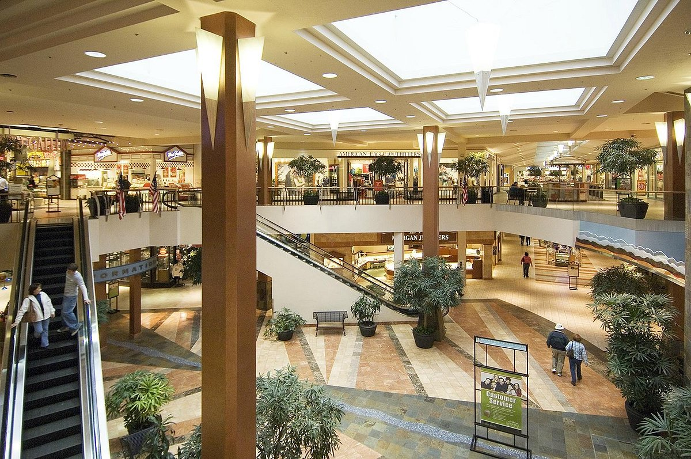
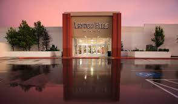
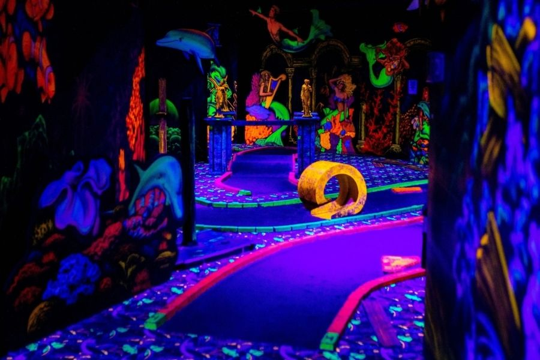
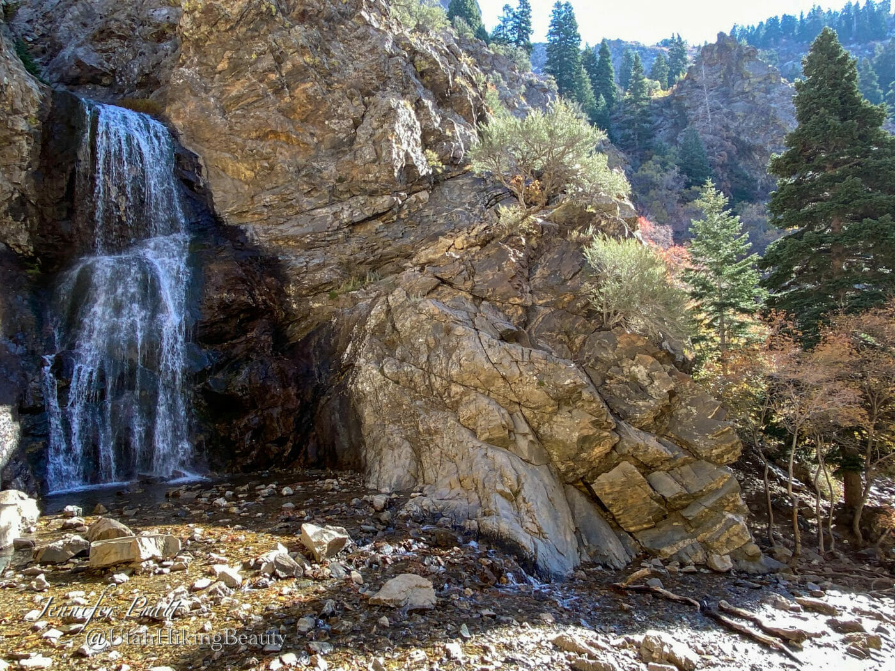
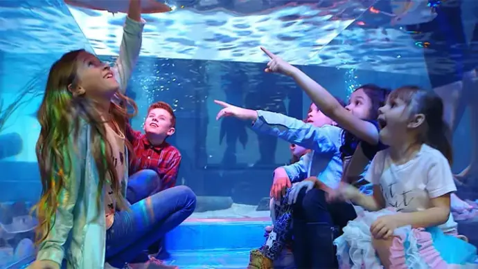
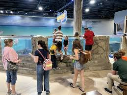
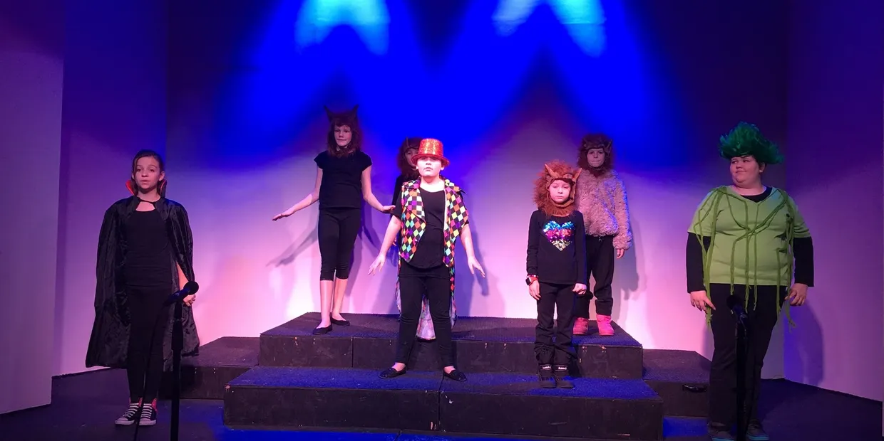
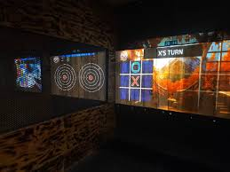

-The best shopping & entertainment destination. A shopping mall featuring more than 100 stores including Macy's, JCPenney and Sports Authority.
 This amusement center offers a wide variety of fun activities, including go-karts, laser tag, bowling, mini golf, and a foam pit.
This hiking area offers a beautiful waterfall, scenic views, and a variety of terrains. The trail is family-friendly, dog-friendly, and provides a good workout, with options for both short and longer hikes.

This aquarium offers a variety of animals, including fish, reptiles, and mammals, and provides opportunities for interactive experiences like feeding and petting. This aquarium also has a freindly staff, and great pricing!
 Layton's only live theatre with broadway style shows, concerts, magicians, improv nights, open mic nights, and more! There is always somethign going on at OPPA!
Axe throwing/Hatchet throwing venue with smash rooms, and paint splatter rooms.
| Layton Hills Mall |
|---|
| Shopping / Eating |
| Best for weekends with friends and family |
| The Rush Funplex |
| Entertainment |
| Best for rainy days |
| Adam's Canyon Trailhead |
| Hiking / Outdoors |
| Best for sunny days |
| Layton Aquarium & Wildlife |
| Entertainment |
| Best for spending time with kids and family |
| On Pitch Performing Arts (OPPA) |
| Entertainment |
| Best for rainy nights |
| Axe N Smash |
| Entertainment |
| Best for date nights, or just for spending time with friends & family. |
1. Start with a hike at Adam's Canyon Lower Falls
2. Eat Lunch at Weller's Bistro
3. Spend your afternoon shopping at Layton Hills Mall
4. Eat dinner at The Garden Grille
5. End your night with a show at On Pitch Performing Arts!
Back To Homepage